练习
| 条项 | 说明 |
|---|---|
| APP | YZ.apk |
| 目标 A | 绕过 root限制 |
| 目标 B | 拿到 abService 签名 key 并通过中间人改至少改一个包（通过签名验证） |
参考资料
| 内容 | 推荐度 | 说明 |
|---|---|---|
| Android Studio 用户指南 | 低 | IDE 说明文档，暂时还用不到 |
| Mac 上可测试开发的安卓模拟器 | 低 | MAC上搭建安卓模拟环境 |
| 在 VirtualBox 中安装 Android 系统 | 低 | MAC上安装各种安卓模拟器失败后的折中方法 |
| Android 反编译及调试利器 | 低 | 一些常用工具 |
| 微信 Android SDK 反编译还原源码 进行修改重新编译 | 低 | 非入门级的思路指导 |
| 移动安全: 通过逆向 APK 绕过 Android root 检测 | 高 | apk为什么要限制root，检测root的原理是什么 |
| Android 反编译后重新打包 | 高 | 入门级思路指导 |
| Android 逆向基础：Smali 语法 | 高 | 逆向后如何修改代码（非源码的中间代码） |
| Smali 基础知识 | 高 | 逆向后如何修改代码（非源码的中间代码） |
| 安卓 apk 反编译、修改、重新打包、签名全过程 | 高 | 反编译后如何重新封包（使用JDK） |
| Android 反编译 Apk，修改资源，重新打包，签名发布 | 中 | 反编译后如何重新封包（使用工具） |
| Inspeckage 安装教程 | 低 | 看看就好，可以不用到 Inspeckage |
| inspeckage xposed 插件分析 app 及微信 Log | 低 | Inspeckage 案例参考 |
| Android App 逆向工程初探 | 高 | 案例参考，逆向后如何找到 HTTP 签名算法 |
工具
| 工具 | 说明 |
|---|---|
| jadx | 用于 apk 反编译（为可读的 java 源码） |
| apktool | 用于 apk 反编译（为不易读的 Smali 中间码） 用于 Smali 重打包为 apk |
| JDK | keytool：用于生成自签名证书 jarsigner：用于给 apk 自签名 |
| 网易 MuMu | 安卓模拟器（蓝叠不支持MAC，夜神又安装失败，最后没办法选了这个） |
| Xposed | 用来胁持系统 API 的 hook 框架 （需要 root 系统才能装） |
| Inspeckage | Xposed 的一个模块，用于动态分析 app（事实上用不到） |
| TrustMeAlready | Xposed 的一个模块，用于绕过 SSL Pinning 防抓包（如果 APP 没有防抓包则用不到） 本来应该装 JustTrustMe 的，但是搜不到，用了这个替代 |
| Burp Suite | 用于抓包和中间人攻击 |
【目标 A】绕过 root 限制
A.1. 解题思路
通过文章《移动安全: 通过逆向 APK 绕过 Android root 检测》可以知道，apk 的 root 检测都是通过（java）代码实现的，因此要绕过 root 的思路也很直白了：
- 反编译 apk 安装包
- 找到 root 检测代码
- 修改检测逻辑，使其不生效（删除或固化其检测结果均可，只要没有多处埋点，一般只有程序入口一处）
- 重新打包为 apk 安装包
- apk 自签名（apk 有防篡改机制，所有文件都会生成 hash 校验码，签名目的是重新生成这些校验码）
- 在启用 root 的模拟器上验证
A.2. 解题过程
A.2.1. 找到 root 检测入口
首先需要 root 检测入口的点在哪。
使用模拟器安装 YZ.apk 并运行，会提示【禁止在 Root 设备运行】，然后会直接关掉 APP 进程，而明显这就是我们需要绕过的逻辑。
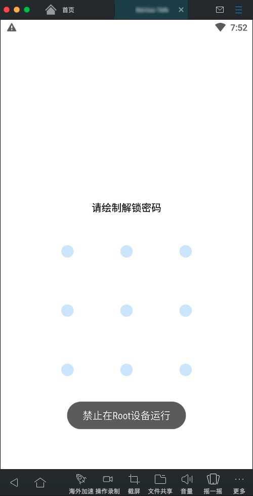
鉴于已经有明显的检测提示【禁止在Root设备运行】，那么使用 jadx 反编译 YZ.apk，然后直接搜索源码哪里出现这个字符串即可，检测逻辑必定在附近。
jadx 反编译得到的是 java 源码
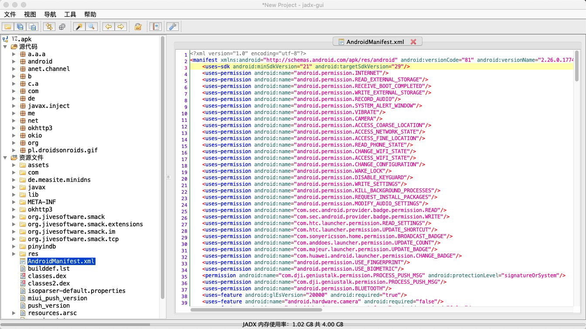
为了方便后续操作，jadx → 另存为 Gradle 项目（这里导出保存目录为 yz_jadx）
Gradle 的定位类似于 Maven
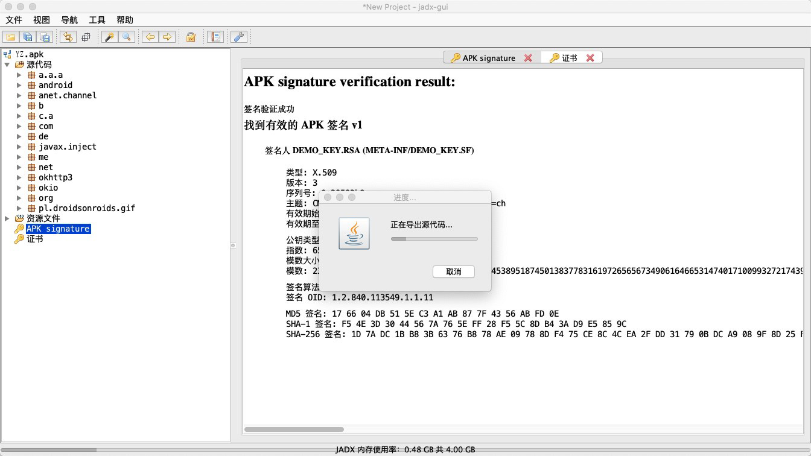
暂时不需要用到 IDE， 直接使用 ST3 打开导出的 Gradle 项目，全局搜索关键字【禁止在】，在文件 src/main/res/values-zh/strings.xml 找到唯一一条定义：【禁止在Root设备运行】
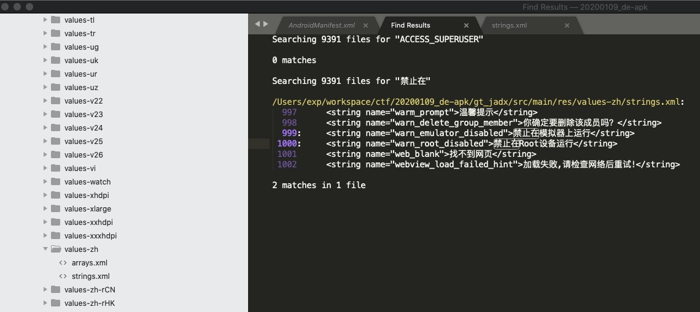
从目录编排上不难判断 src/main/res/values-xx 就是用于定义某国 xx 语言的提示字符串的 xml 配置文件，很明显这是一个多国语言的 APP。
而且从 xml 格式和内容来看，很明显定义了两个变量：
warn_root_disabled= “禁止在Root设备运行”warn_emulator_disabled= “禁止在模拟器上运行”
与这两个变量相关的逻辑极可能都是我们需要绕过的。
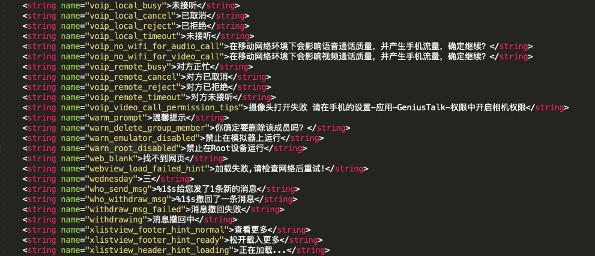
再次全局搜索关键字【warn_root_disabled】，在文件 src/main/java/com/xxx/oooooooooo/ui/main/MainActivity.java 找到唯一一次代码引用：
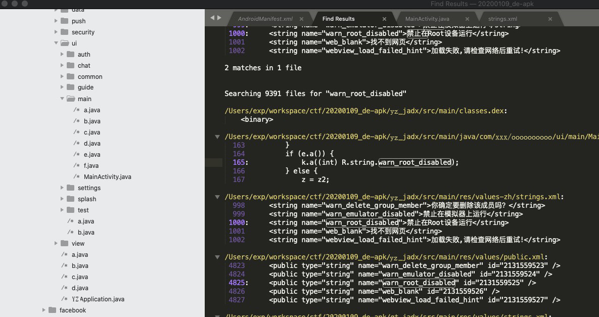
查看 MainActivity.java 类的源码，发现明显被混淆过了。
不过不难判断方法 private void e() 内实现了【root 检测】和【模拟器检测】。因为前面搜索到的两个目标变量都在这里出现了：
warn_root_disabled= “禁止在Root设备运行”warn_emulator_disabled= “禁止在模拟器上运行”
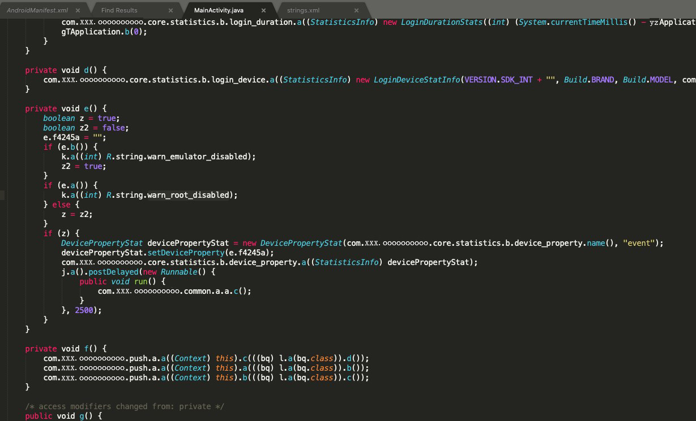
A.2.2. 修改 root 检测逻辑（java源码）
其实从源码不难解读到：
e.b()是用于检测模拟器的e.a()是用于检测 root 的k.a()应该是输出提示消息到 UI 的
而最开始在模拟器上运行 YZ.apk 所诱发的提示【禁止在Root设备运行】，明显就是 k.a((int) R.string.warn_root_disabled); 这行代码执行结果。
那么要达到无法检测 root 的目标，只需要让 k.a() 所在的条件分支代码无法执行即可，例如这样修改代码：
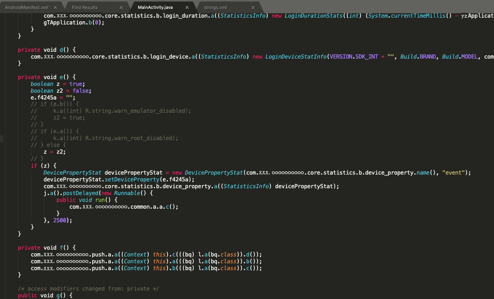
但是修改 java 源码后，使用 apktool b yz_jadx 命令重新编译打包会报错：【brut.directory.PathNotExist: apktool.yml】
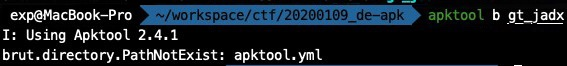
从 Github issue 找到原因，这是因为 yz_jadx 是通过 jadx 逆向得到的项目，亦即 yz_jadx 并不是 apktool d 命令逆向生成的，导致 apktool 找不到 apktool.yml 文件，从而无法重新打包。
A.2.3. 修改 root 检测逻辑（Smali中间码）
于是这里变更逆向的方法：使用 apktool d YZ.apk 命令反编译 YZ.apk ，得到目录名为 YZ 项目。
在目录下果然可以找到 apktool.yml 文件，在里面还记录了每个类的 JDK 编译版本为 8 （即 1.8）。
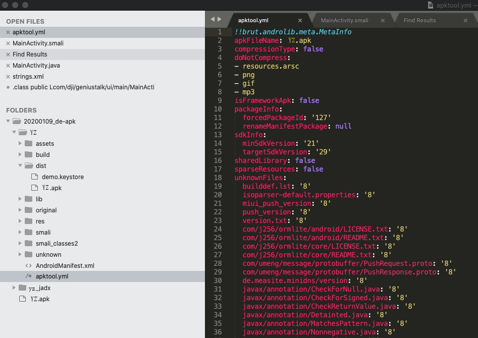
需要注意的是，使用 apktool 逆向出来的代码不是 java，而是名为 smali 的中间码。
根据前面所找到的 java 文件 src/main/java/com/xxx/oooooooooo/ui/main/MainActivity.java，可以对应找到的 smali 文件 smali/com/xxx/oooooooooo/ui/main/MainActivity.smali。
稍微学习一下 smali 语法，不难找到 smali 的 .method private e()V 就是 java 的 private void e()。
两种代码的对应关系整理如下：
| 序号 | smali 中间码 | java 源码 | 分析说明 |
|---|---|---|---|
| 01 | .method private e()V… .end method |
private void e() {… } |
定义方法 |
| 02 | .locals 4 |
- | 声明方法内的局部变量个数 |
| 03 | .prologue |
- | 声明代码块开始位置 |
| 04 | .line 178 |
- | 声明对应 java 源码的行数 |
| 05 | const/4 v1, 0x1 |
boolean z = true; |
变量赋值，v1 即 z |
| 06 | const/4 v0, 0x0 |
boolean z2 = false; |
变量赋值，v0 即 z2 |
| 07 | const-string v2, "" |
e.f4245a = "" |
变量赋值，v2 即 e.f4245a |
| 08 | sput-object v2, Lcom/xxx/oooooooooo/common/g/e;->a:Ljava/lang/String; |
- | 根据操作指令 sput-object 猜测是初始化类 e 内的 String 成员变量 a，类似于 e.a = null ，因此怀疑这是执行了类 e 的构造函数 |
| 09 | invoke-static {}, Lcom/xxx/oooooooooo/common/g/e;->b()Zmove-result v2 |
e.b() |
从上下文推测，实际效果是 e.f4245a = e.b()，即 e 的成员变量 f4245a 会因为 b() 的结果而改变，而 b() 的作用前面分析过是检测是否在模拟器运行 |
| 10 | if-eqz v2, :cond_0 |
if (e.b()) |
满足条件时，跳转到 :cond_0 位置 |
| 11 | const v0, 0x7f0d0464invoke-static {v0}, Lcom/xxx/oooooooooo/c/k;→a(I)Vmove v0, v1 |
k.a((int) R.string.warn_emulator_disabled);z2 = true; |
0x7f0d0464 值为 2131559524，没意义，估计是初始化参数寄存器。k.a() 前面分析过是输出提示消息的，这里就是禁止模拟器运行分支，既是要绕过的目标之一，最后利用 z2 设置了分支 flag 标记 |
| 12 | :cond_0invoke-static {}, Lcom/xxx/oooooooooo/common/g/e;→a()Zmove-result v2 |
e.a() |
从上下文推测，实际效果是 e.f4245a = e.a()，即 e 的成员变量 f4245a 会因为 a() 的结果而改变，而 a() 的作用前面分析过是检测是否在 root 环境运行 |
| 13 | if-eqz v2, :cond_2 |
if (e.a()) |
满足条件时，跳转到 :cond_2 位置 |
| 14 | const v0, 0x7f0d0465invoke-static {v0}, Lcom/xxx/oooooooooo/c/k;->a(I)V |
k.a((int) R.string.warn_root_disabled); |
0x7f0d0465 值为 2131559525 ，没意义，估计是初始化参数寄存器，k.a() 前面分析过是输出提示消息的，这里就是禁止 root 运行分支，绕过目标之一 |
| 15 | :goto_0 |
- | 从上下文分析，这个标签是从后面的代码回溯回来的 |
| 16 | if-eqz v1, :cond_1 |
if (z) |
满足条件时，跳转到 :cond_1 位置 |
| 17 | .line 192… |
j.a().postDelayed(new Runnable() { public void run() { com.xxx.oooooooooo.common.a.a.c(); }} |
这段代码的作用，根据上下文推测就是 终止进程 |
| 18 | :cond_1return-void |
return; |
直接从当前函数返回 |
| 19 | :cond_2move v1, v0 |
z = z2; |
利用 z 设置了分支 flag 标记 |
| 20 | goto :goto_0 |
- | 无条件跳转到 :goto_0 位置 |
更具体的对应关系见下图：
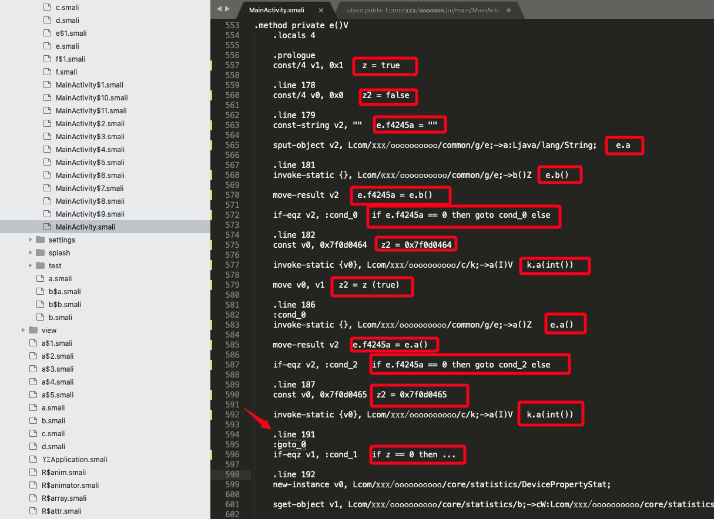
有了对应关系，结合前面修改 java 代码的思路，其实就很容易修改 smali 代码了：
- 方案1：只要使得在执行
if (z)时（对应上表16行），令z == false即可 - 方案2：直接注释/删除掉终止进程的代码（对应上表17行）
方案2其实是最简单的，但是我有个顾虑就是：smali 用 .line 标记了对应 java 源码的行数，我担心 smali 会像汇编一样，如果不使用类似 nop 的空语句去填充会使得重编译后的文件无法执行。
因此我采用了方案1，不改动代码行数的前提下，通过跳转实现条件分支的绕过。
其实方法也很简单，只需要把上表第 10 行和第 13 行的 if-eqz 条件跳转改成无条件跳转即可。
| 修改前 | 修改后 |
|---|---|
if-eqz v2, :cond_0 |
goto :cond_0 |
if-eqz v2, :cond_2 |
goto :cond_2 |
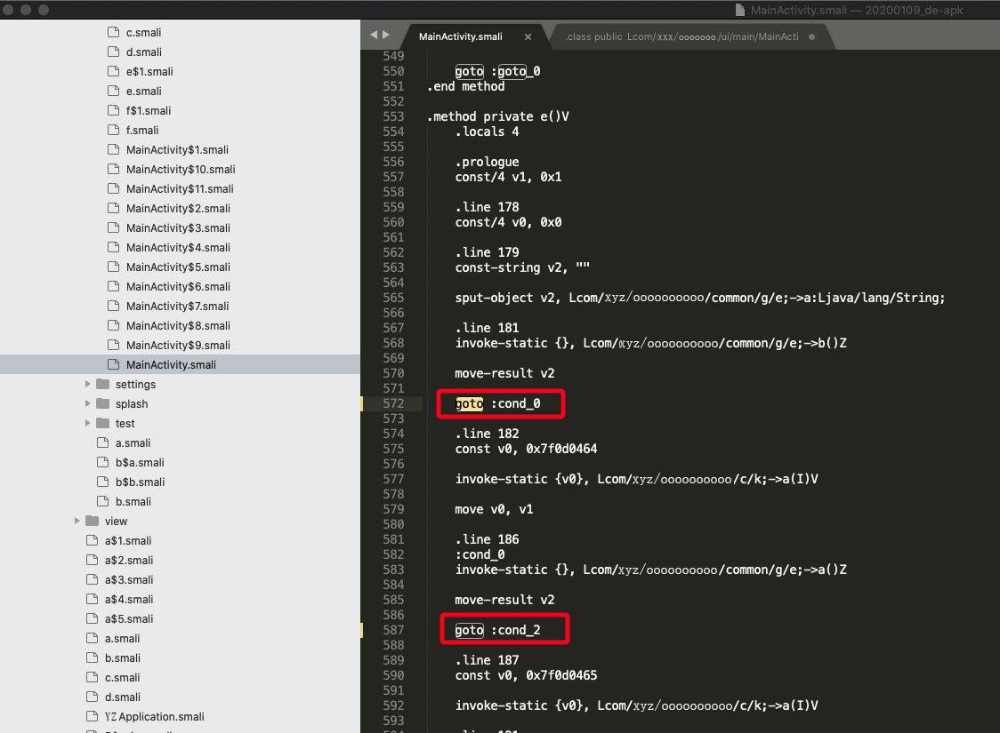
A.2.4. 重新编译打包
因为前面已经从 apktool.yml 知道这个 apk 原本是使用 JDK 1.8 编译的，
重新编译前需要注意设置系统环境变量，把 JDK 版本切换到 1.8 ：
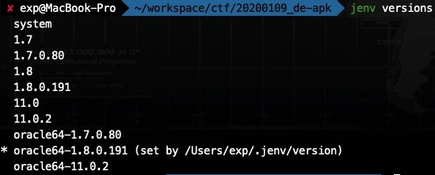
执行命令 apktool b YZ，在目录 YZ/dist/ 下会生成新的 YZ.apk 文件 ：
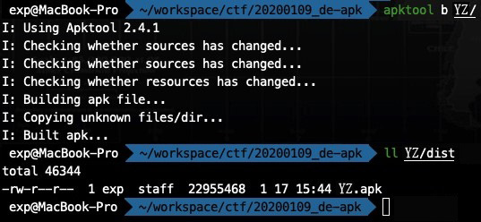
A.2.5. 签名
新生成的 YZ.apk 是不能够安装的，原因是安卓有防篡改机制，会把所有文件的 Hash 校验码记录到 META-INF/MANIFEST.MF 文件。
而刚刚我们修改过代码，Hash 校验码必定已经改变。
而对安装包签名目的之一是重新生成 META-INF/MANIFEST.MF 。
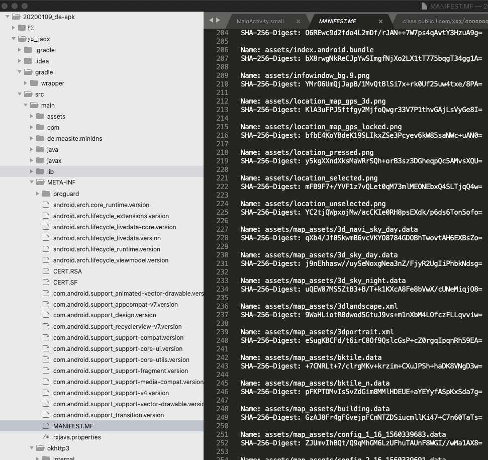
签名采用自签名即可，可以直接使用 JDK 自带的工具执行。
首先生成证书：keytool -genkey -alias demo.keystore -keyalg RSA -validity 40000 -keystore demo.keystore
根据提示随便填写即可。
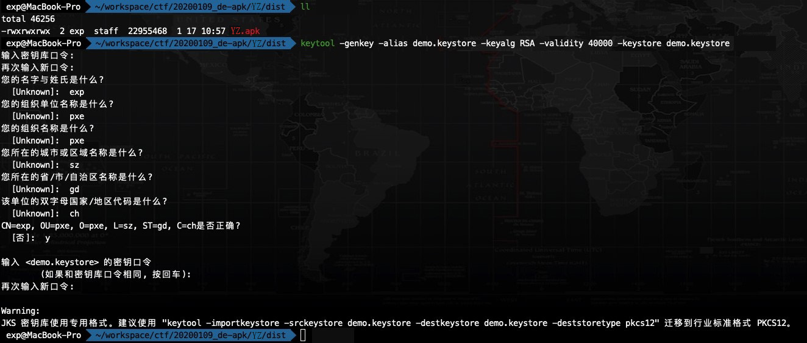
然后使用这个证书对刚才重新编译的 YZ.apk 自签名：jarsigner -verbose -keystore demo.keystore YZ.apk demo.keystore
得到最终的 YZ.apk。
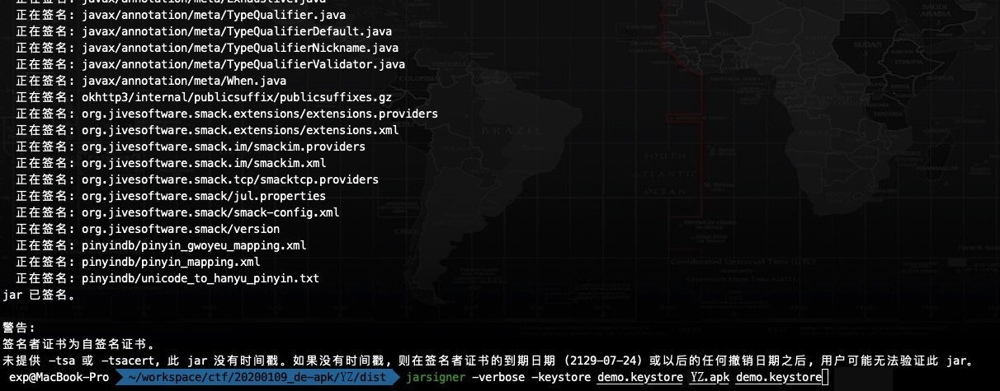
使用 jadx 打开签名后的 YZ.apk，可以确认到刚才的签名信息：
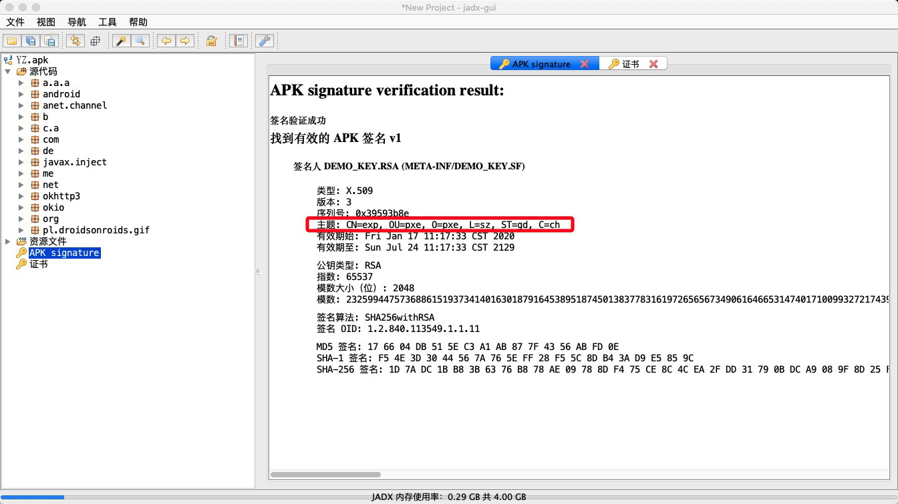
在模拟器上安装 YZ.apk 并运行，成功绕过 root 检测。
【目标 B】通过 abServer 签名验证
B.1. 解题思路
- 在模拟器运行 YZ，并在 YZ 中执行某些操作
- 利用 Burp Suite 对模拟器抓包
- 观察所执行的操作对应触发的 HTTP 请求
- 通过 HTTP 请求的特征（URL、参数等）在反编译代码中定位大概位置
- 找到 HTTP 请求参数中 signature 签名值的来源，分析其生成算法
- 篡改 HTTP 请求参数并对其签名，并通过算法生成新的 signature 并发送到服务器，实现中间人攻击
B.2. 解题过程
B.2.1. 搭建抓包环境
【B.2.1.1. 搭建 xposed 环境（可选）】
在安卓模拟器上安装 Xposed，再安装 Inspeckage 和 TrustMeAlready 模块，然后通过 Inspeckage 启动 YZ ：
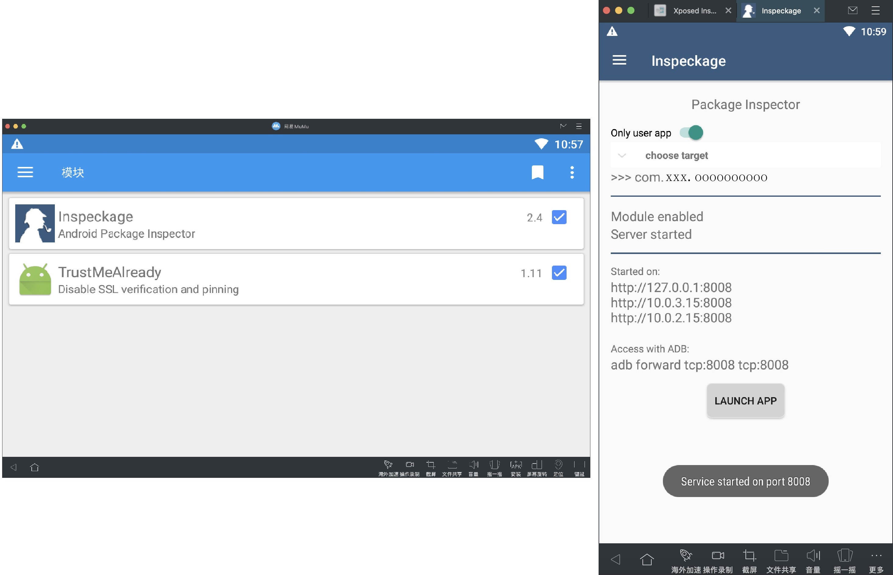
MAC 下的相关命令：
- 重启 adb 服务并连接到 adb shell：
adb kill-server && adb server && adb shell - 转发 Inspeckage 的 web 服务端口：
adb forward tcp:8008 tcp:8008 - 转发 Inspeckage 的 LogCat 服务端口：
adb forward tcp:8887 tcp:8887
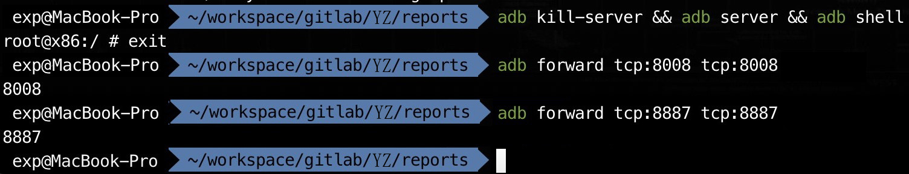
此时通过浏览器打开 http://127.0.0.1:8008/ 即可查看 YZ 详细的 APP 信息：
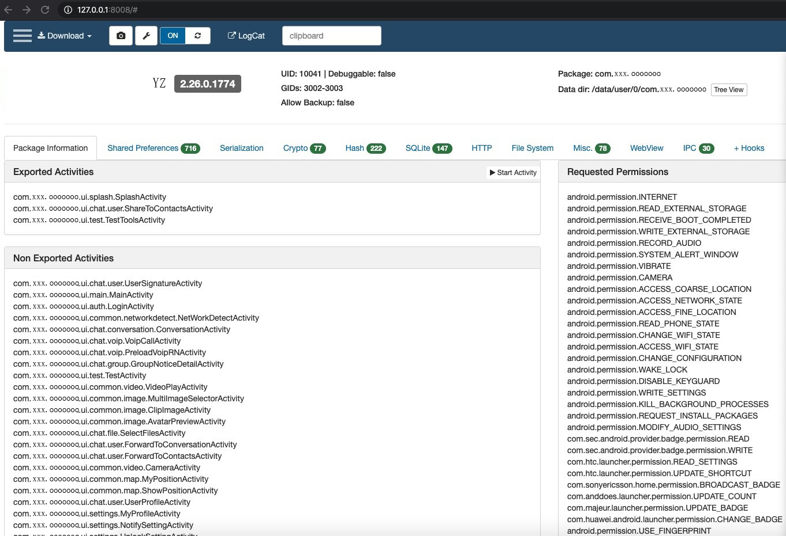
【B.2.1.2. 搭建 Burp Suite 环境（必须）】
依次点选：Burp Suite → Proxy → Options → Proxy Listeners → Add → Binding
-【Bind to port】随便填写即可（如当前为 8080）
-【Bind to address】选择 Specific address 并选择局域网 IP （如当前为 192.168.1.104）
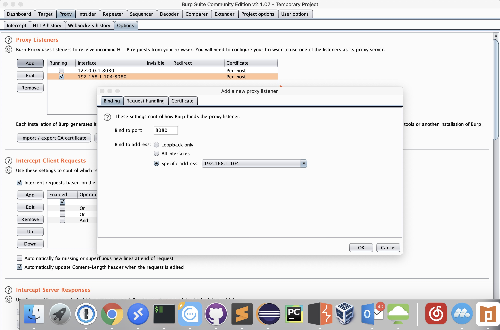
在网易 MuMu 依次点选： 设置 → WLAN → 长按 → 修改网络 → 高级选型 → 代理 → 手动
-【代理服务器主机名】填写 Burp Suite 监听的 IP （如当前为 192.168.1.104）
-【代理服务器端口】填写 Burp Suite 监听的端口（如当前为 8080）
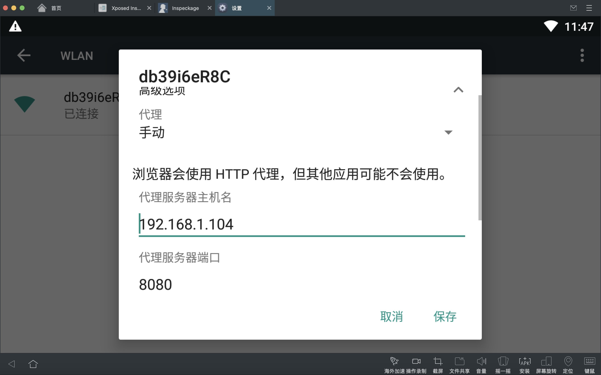
如上配置好后，即可从 Burp Suite → Proxy → HTTP history 查看抓到的各个 HTTP 请求：
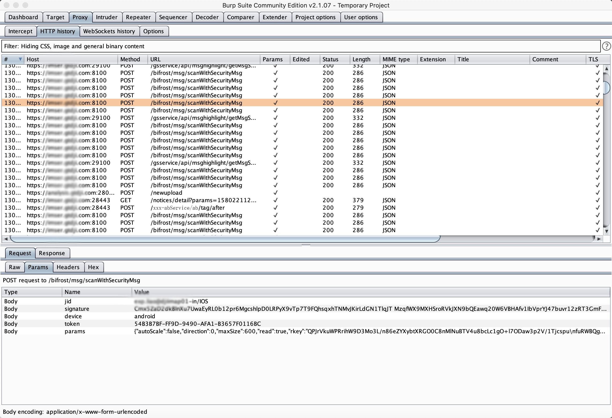
B.2.2. 观察 & 分析包特征
不难发现，在启动 YZ 后，已经发出了相当一部分 HTTP 请求。观察这些请求参数的特征，几乎都带了 token 和 signature 两个参数。
测试发现：
- token：当前会话的固定值，每次重新登录 YZ 后会变化
- signature：
o 大部分都是 32 位，形似 MD5
o 少量（如/bifrost/msg/scanWithSecurityMsg） 是一个 RSA 的数字签名 （事实上从代码发现，签名用的是 SHA256withRSA，加密用的是 AES ）
o 直接计算请求参数的 MD5 ，与 signature 并不一致，说明 signature 加了 salt
o 不同请求的 signature 都不一样，但重发同一个请求，服务端均返回成功，说明 signature 没有用时间作为 salt
o 修改请求参数中的任意内容并发送，服务端返回 400: signature is empty or is not equal ，结合前面几点推测，salt 可能是一个固定值
o 修改 token 并发送，服务端返回 401: token is empty or not exists，推测 signature 的计算过程中并没有 token 参与
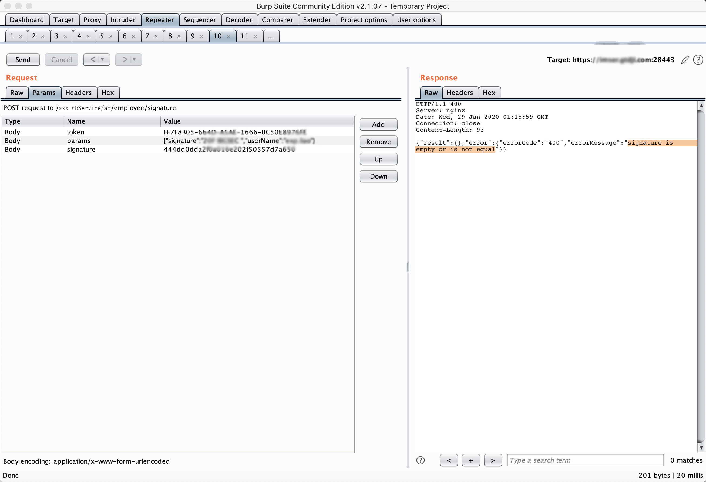
B.2.3. 代码逆向分析
从前一节分析已经知道，signature 含有两种（甚至以上的形式）：MD5 和 RSA 。
要实现题目要求的中间人攻击，则需要成功伪造签名，亦即需要找到 signature 的计算方法。
简单起见，下面以 MD5 形式的 signature 作为目标展开分析。
这里从修改 YZ 个人信息入手，例如修改【电话】。
保存修改后，在 Burp Suite 捕获到 URL 为【/xxx-abService/ab/employee/phone】的请求。
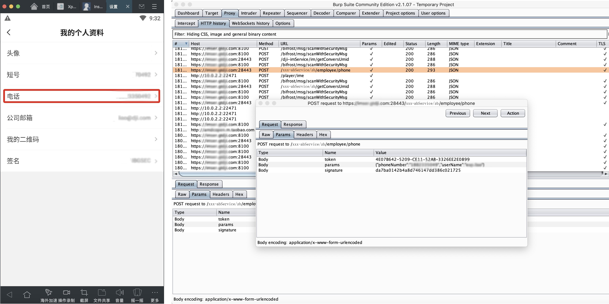
在逆向的 java 代码中全局查找关键字【/xxx-abService/ab/employee/phone】
可以从 src/main/java/com/xxx/oooooooooo/core/d/f.java 类中找到唯一值【UPDATE_USER_PHONE(“/xxx-abService/ab/employee/phone”)】
而且很明显，src/main/java/com/xxx/oooooooooo/core/d/f.java 类是定义了所有 URL 的枚举对象。
注：为了便于分析代码逻辑（调用跳转等），建议先把逆向代码导入 Eclipse 等 IDE 再分析。
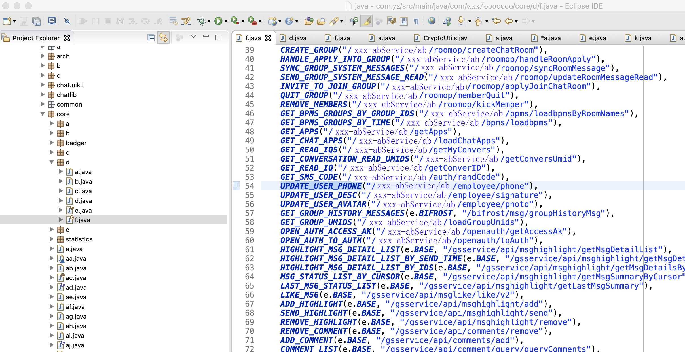
再全局查找关键字【UPDATE_USER_PHONE】，可以从 src/main/java/com/xxx/oooooooooo/core/d/d.java 类中找到唯一调用它的函数【public c<UserPhoneResponse> c(String str, String str2)】。
简单分析代码可以知道：
src/main/java/com/xxx/oooooooooo/core/d/d.java类是 abService 所有 API 的接口实现- 【
public c<UserPhoneResponse> c(String str, String str2)】函数是接口 “/xxx-abService/ab/employee/phone“ 的实现 - 该函数的主要作用是构造接口的 HTTP 请求参数 params （Builder 类使用了构造者模式，其作用就是填充 HTTP 结构体的内容）
- 从实现逻辑看，只是构造了参数 params ，而 token 和 signature 参数并未被构造
- 观察其他接口实现的函数，均未构造 token 和 signature 参数
- 推测 token 和 signature 被封装到同一个地方实现，而最可疑的就是【
return a( .... )】函数
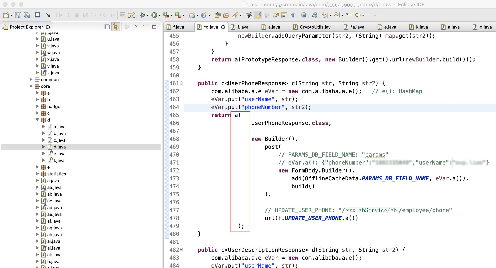
因为逆向代码被混淆的关系，出现了很多同名类、同名方法，导致 Eclipse 的函数调用跳转功能出现偏差。
若直接跳转到【return a( .... )】函数的实现，会跳到一个接口【com.xxx.oooooooooo.data.api.g.java】定义的方法【c<GroupsResponse> a(long j, int i);】
事实上从函数定义的入参表就可以发现，这是不对的（当时分析代码的时候就被这里卡住了好长时间）。
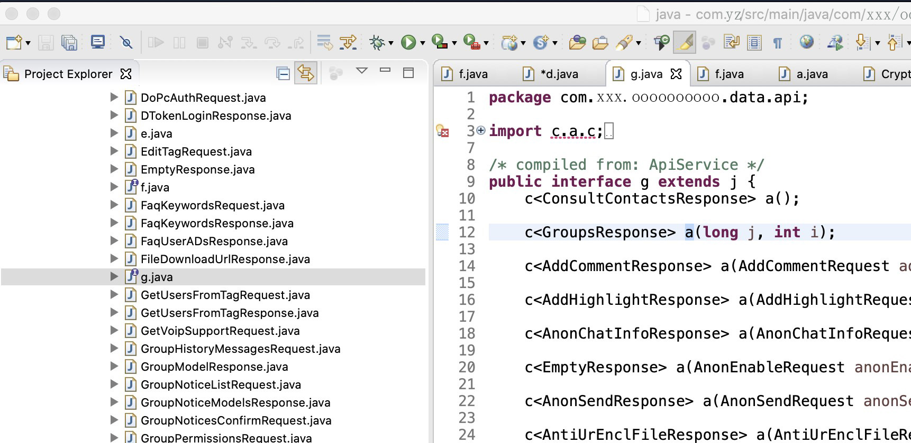
因此这里只能通过人工分析【return a( .... )】函数的实现位置：
- 由于函数 a 在调用时没有声明类名，它应该不是静态方法，因此应该在父类或本类中
- 从实际传给函数 a 的入参推测，其函数定义应该形如【
c<T> a(Class<T> xxx, Builder yyy)】 - 但是因为代码混淆导致变量名随机化的关系，这个函数定义中可以确定用于全局搜索的部分只有【
> a(Class<】
根据这些特征搜索，发现该函数的实现就是在本类的最开头的位置，名为【private <RESULT extends NoProguard> c<RESULT> a(Class<RESULT> cls, Builder builder)】
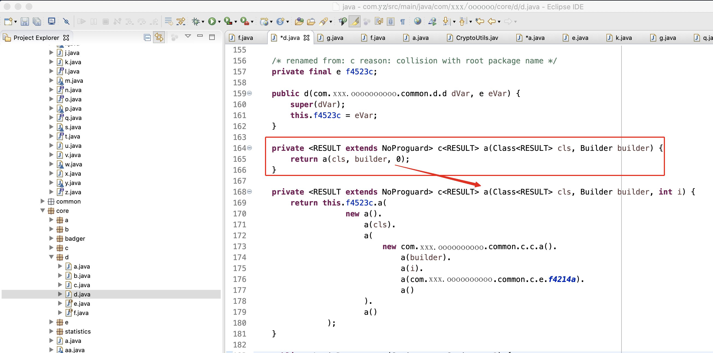
但是从设个函数中并不能直观地看到 token 和 signature 被构造的痕迹，不过可以发现 builder 参数确实被送到函数 a(builder) 中被处理了。
遗憾的是，同样因为混淆的关系，这些 a 类、a 方法全部都关联到了错误的位置。
不过可以从侧面分析还是可以得到一些信息的：
- 首先这是一个模板函数，函数的出参命名为
<RESULT>，因此猜测【this.f4523c.a( ... )】原本应该是类似于【response = this.APIs.call( request )】的定义 - f4523c 的对象类型为
com.xxx.oooooooooo.data.api.e.java类，这个类有不少诸如 ApiResponse、HttpResponse 的处理，佐证了前面的猜想
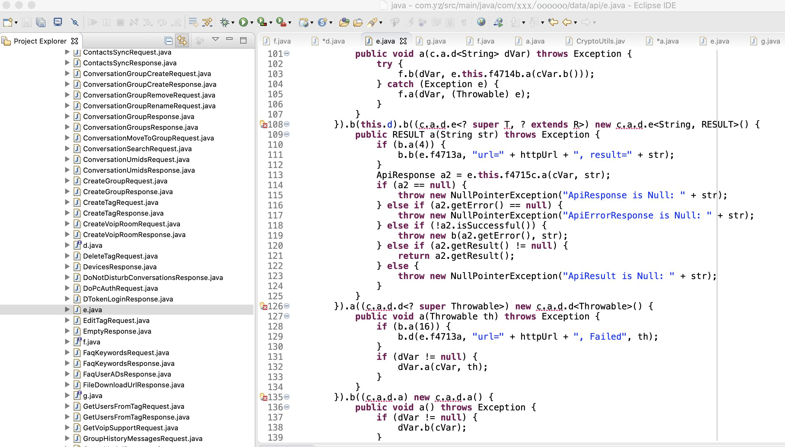
那么问题的关键再次回到函数【this.f4523c.a( ... )】的入参【new a( ... )】
这个类定义在哪里? 它很可能就是为 Builder 添加 token 和 signature 的关键。
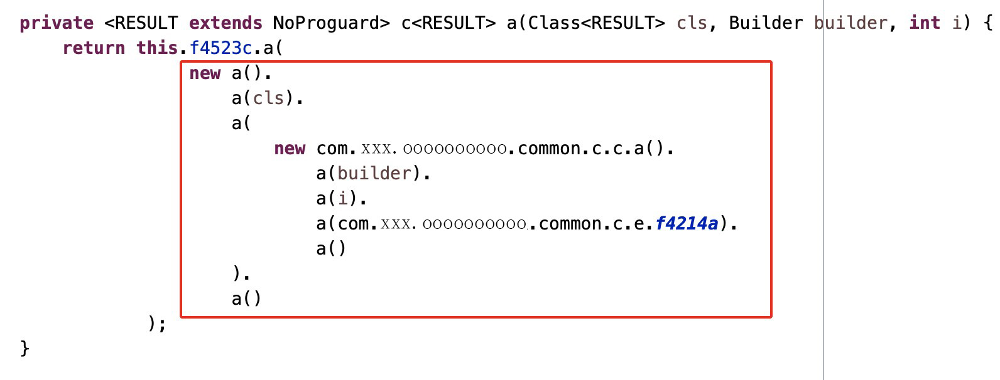
这里其实还有一个隐晦的提示，在 Java 中：
- 同一个类中若 import 两个同名类，至少其中一个要使用全类路径
- 同 package 下的非私有类可以无需 import 直接使用
而【new a( ... )】的使用方式极可能就是后者，于是在 d.java 类的相同 package 下找到了 src/main/java/com/xxx/oooooooooo/core/d/a.java 类。
在这个类中发现一些特征极可能就是我们要找的：
- import 中的 okhttp3 是用于处理 HTTP 请求的
- 函数【
public Response intercept(Chain chain)】中涉及了 POST/GET 请求下关于 token 和 signature 的处理逻辑
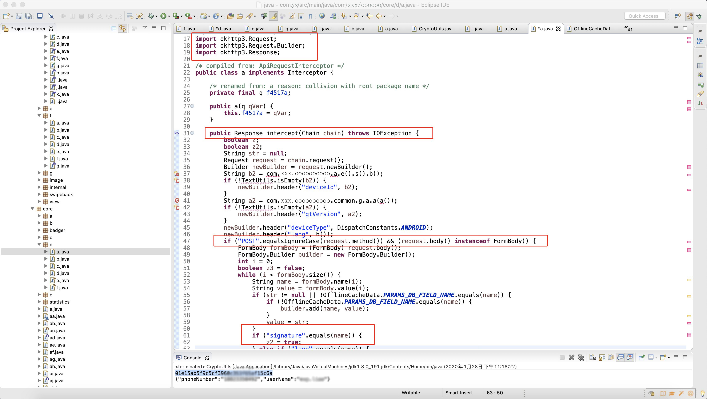
B.2.4. 签名算法
分析这块代码可知，signature 一共有三种算法：
- POST 请求有两种算法
- GET 请求有一种算法（暂时不关注，下面就不分析了）
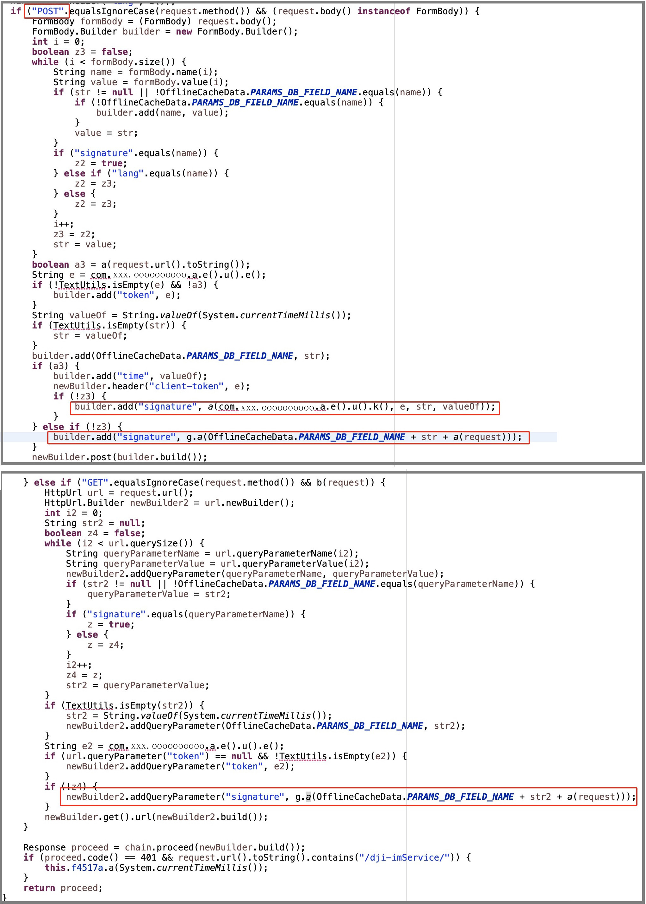
针对 POST 方法的 signature 的两种具体算法分析如下：
signature = RSA(rsakey, token + params + millis)（暂时不关注，不再详细分析）signature = MD5("params" + params + "DnWX83SksBoctyoVDmEkyEDuzB6i2RUyWY4A9m**********xxxhin31rzDU")
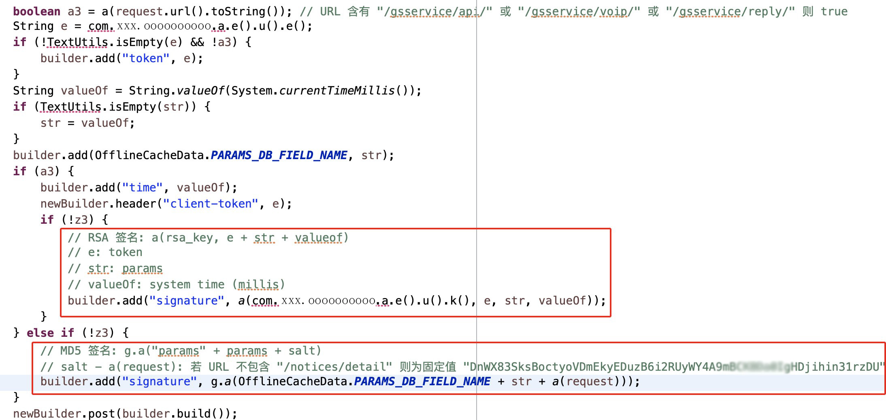
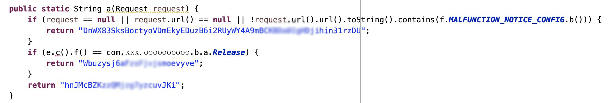
回到最开始的抓包请求：
- Method: POST
- URL：
/xxx-abService/ab/employee/phone - token: 4E07B642-5209-CE11-52AB-3326EE2E0899
- params:
{"phoneNumber":"***********","userName":"******"} - signature: da7ba0142b4a8d746147dd386c021725
随便找一个 MD5 计算工具（如 http://www.jsons.cn/md5/s/ ），代入前面的公式计算，若得到相同的 signature，说明成功得到 signature 的签名算法，可以实现中间人攻击。
注：测试发现 signature 必须全小写，大写不能通过验证。
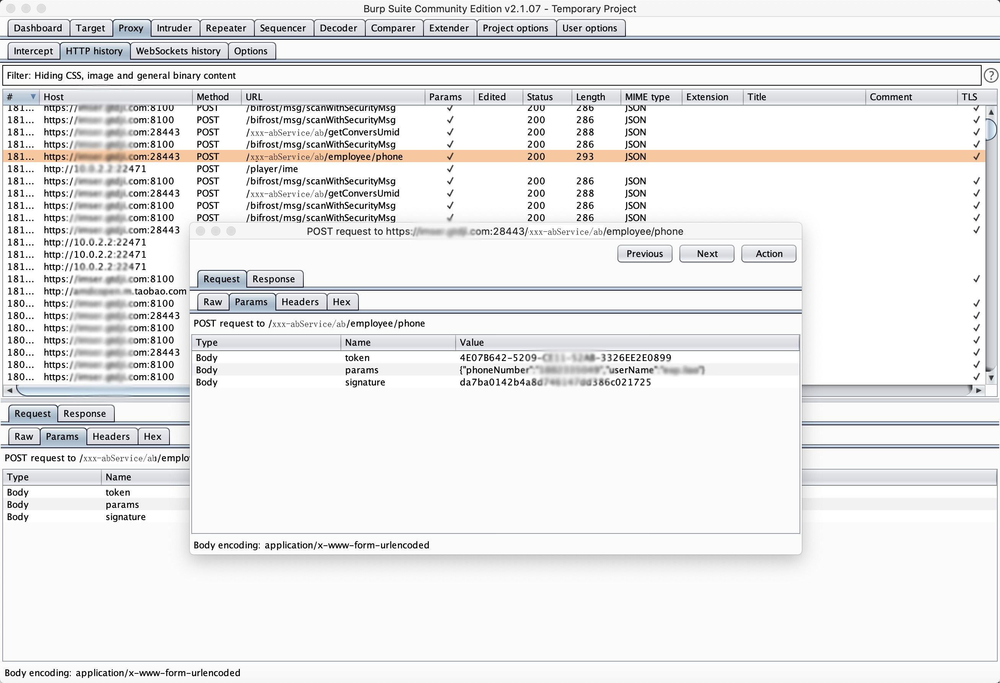
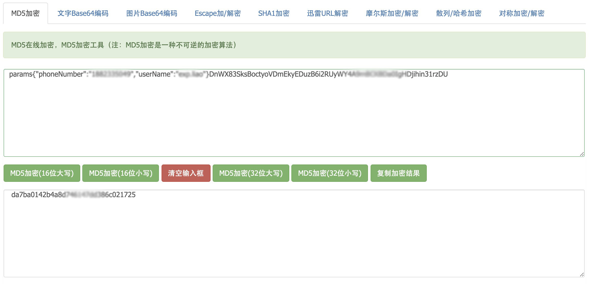
B.2.5. 实现中间人改包
- 修改 params 为
{"phoneNumber":"00000000000","userName":"******"} - 计算 signature 签名值为 993fee1a8f4ca2a54fbc5ec589ede5bd
- 通过 Burp Suite 发送请求，修改个人信息成功。
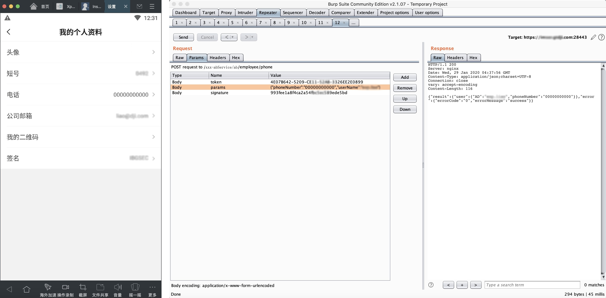